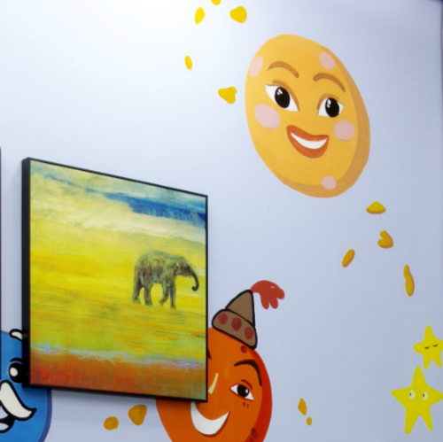

诊所故事
-
22Jul
-
25Jul
丁香诊所正式落成，要填补国内市场家庭医生诊所的空白
16-07-25 36Kr丁香诊所正式落成，要填补国内市场家庭医生诊所的空白
查看更多上个月，丁香园旗下丁香医生诊所的第一家门店正式在杭州落成。以美国全科医疗体系为基础，丁香医生诊所想要成为打通线上线下服务的一站式连锁医疗服务机构。 为什么要做全科诊所？丁香园创始人李天天表示，传统体制在资源方面有先天优势，但也不缺不足之处。丁香医生诊所瞄准的是这些大医院不愿做但又做不好的领域，与传统大医院形成错位竞争。
-
15Jul
积累了足够多的线上用户之后，丁香园也开始切入线下做诊所了
16-07-15 雷锋网积累了足够多的线上用户之后，丁香园也开始切入线下做诊所了
查看更多「选择全科有三个原因。一，和大医院定位区分开来。实事求是地说，和大医院的正面竞争比较困难；二，医改最能撬动的也就是基层医疗服务，所以做社区型诊所的机会更大；三，政府鼓励基础医疗。当然专科也有机会，但我们的判断是全科的机会更大。」----李天天。
-
25Jul
-
15Jul
丁香园首家线下诊所正式落成
16-07-15 腾讯大浙网丁香园首家线下诊所正式落成
查看更多丁香园创始人李天天表示，传统体制在资源方面有先天优势，但也有不足，丁香诊所瞄准的是这些大医院不愿做但又做不好的领域，与传统大医院形成错位竞争，但又要吸取传统医院以质量以安全为准绳的优势。
-
15Jul
是诊所不是医院的丁香诊所：小蚁与大象共舞
16-07-15 浙江在线是诊所不是医院的丁香诊所：小蚁与大象共舞
查看更多「我们是诊所，不是医院。」经历了 15 年的沉淀，作为国内首屈一指的互联网医疗品牌——「丁香园要落地」从一开始就符合人们的期待，而到它真的落地了，我们却发现它和想象的不太一样。11 月初，丁香园创始人、董事长李天天说，丁香园第一个落地的诊所即将正式开业，相较之前疯传的 10 月 8 日的开业时间晚了 1 个多月，但好在这似乎是个值得期待的「不一样的诊所」。
-
15Jul
探秘：终于揭开面纱的丁香诊所长啥样
16-07-15 健康点探秘：终于揭开面纱的丁香诊所长啥样
查看更多「丁香诊所正式开业大概会在 11 月初！10 月 8 日是诊所装修全部完成了，邀请政府监管部门来看，提出不足和需要整改的地方。这跟开网站的审批手续是一样的，得事先把场地、各种设备、设施准备齐全，然后请相关部门来检查，对设施布局提出意见审核通过后才能正式开业。」当外界对丁香医生诊所没有如期开业发出质疑时，在近日丁香园的媒体沟通会上，丁香园创始人李天天做了上述回应。
- 微信自助预约
- 高效就诊流程
- 诊后微信随访
杭州市滨江区滨盛路口 2313 号 (长河路滨盛路口)
T: 0571-86687392
E: dxzs01@dxy.cn